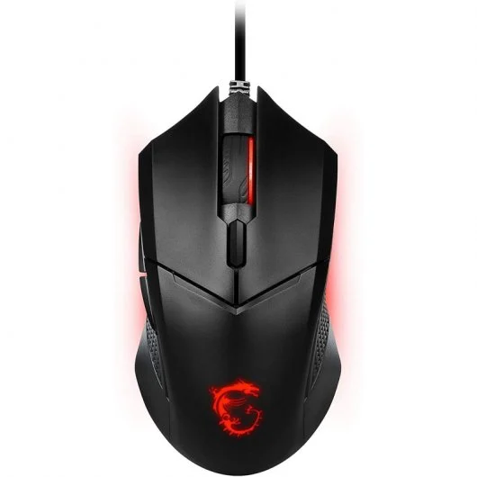
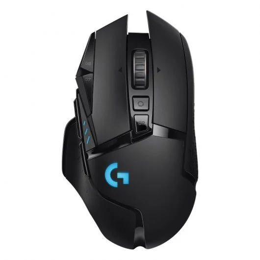

Logitech Pro Xmore_vert
Logitech Pro X Superlight Ratón Gaming 25600DPI Blancoclose
- Sin obstáculos: Uno de los resultados de nuestra colaboración constante con los mejores profesionales de eSports, PRO X SUPERLIGHT está pensado con un solo objetivo: crear el ratón inalámbrico para gaming PRO más ligero posible sin renunciar a la calidad, la integridad estructural ni los estándares profesionales ofrecidos por Logitech G. Gana el juego antes que nadie.
- Sin rodeos: Nuestro ratón PRO más ligero hasta la fecha, PRO X SUPERLIGHT, supone un avance de ingeniería con un peso inferior a 63 gramos (casi un 25% más ligero que nuestro ratón inalámbrico PRO estándar). Este logro se debe a una meticulosa labor para producir una máxima reducción de peso sin comprometer el rendimiento.
- Sin titubeos: Céntrate en la victoria con LIGHTSPEED, nuestra innovadora tecnología de calidad profesional que ofrece gran capacidad de respuesta y una robusta conectividad.
- Sin fallos: El sensor HERO 25K exclusivo de Logitech G proporciona una precisión, velocidad y homogeneidad inigualables. PRO X SUPERLIGHT ofrece máxima exactitud y control riguroso, para actuar con toda confianza, especialmente en los momentos más intensos de un torneo.
- Sin resistencia: Los grandes pies de PTFE sin aditivos ofrecen un deslizamiento fluido para una conexión pura y fluida con el juego.
- Sin huella de carbono: PRO X SUPERLIGHT cumple con los más altos estándares de sostenibilidad. Sin PCV y con resina PCR (material reciclado posconsumo), es un producto certificado con huella de carbono neutra. Mediante la compra de energía renovable y compensación de carbono, nuestras instalaciones de fabricación producen cero emisiones.
Razer Basilisk V3more_vert
Razer Basilisk V3 Ratón Gaming Óptico RGB 26000 DPIclose
- Ergonomía y diseño al alcance de tu mano Su forma, es un factor determinante para tu ergonomía. Desde su fabricación, se ha pensado en el jugador gamer más avanzado. Ya que un jugador cómodo, es un jugador que rinde en el campo de batalla. Si quieres confort y buen agarre, este será el mejor ratón que puedas adquirir. Calidad y precio, garantizado.
- Velocidad, a tu disposición Gracias a su botón DPI, podrás ajustar la velocidad en función de tu necesidad. Ya necesites tener rapidez en tus movimientos, como precisión en ellos, este mouse, te proporcionará todo lo necesario para que puedas eliminar a tu enemigo, en tu mejor partida. Por otra parte, su rango de DPI está desde los 800 hasta 10000DPI ¡Toda una auténtica bestia!
- El ratón más completo del mercado Un detalle importante de este periférico es su luz RGB inferior. En la noche tendrás la posibilidad de iluminarte, en tus mejores partidas.También será capaz de proporcionarte esa ligereza con la que siempre has soñado, gracias a su peso de tan solo 146 g que, junto con su cable de 1,8 m te garantiza una gran conectividad a un precio inigualable ¡Compra calidad, compra victoria!

Logitech G305 more_vert
Logitech G305 LightSpeed Ratón Inalábrico Gaming 12000DPI Negroclose
- Tecnología inalámbrica Lightspeed para todos: G305 es un ratón inalámbrico para gaming LIGHTSPEED diseñado para un rendimiento excelente con las innovaciones tecnológicas más recientes a un precio asequible.
- Sensor Hero: El sensor HERO es el sensor óptico para gaming de Logitech G de próxima generación capaz de un rendimiento increíble y de una eficiencia sin precedentes. Porque en el gaming inalámbrico, no puede haber concesiones. Programa dpi de 100 a 12.000 y guarda hasta cinco perfiles en la memoria integrada.1
- Tecnología inalámbrica Lightspeed: Con LIGHTSPEED, la tecnología inalámbrica es tan rápida como la conexión con cable. La solución integral diseñada meticulosamente de Logitech G da a los jugadores la libertad de la tecnología inalámbrica y el rendimiento de 1 ms necesarios para gaming.
- Duración ultralarga: El sensor HERO y LIGHTSPEED ofrecen una eficiencia extrema para que puedas jugar durante 250 horas con una sola pila AA. Cuenta con unos nueve meses de uso habitual, al máximo rendimiento, antes de tener que cambiar la pila.2 Y no te preocupes, el ratón G305 tiene un indicador luminoso que te avisa cuando queda un 15% de carga de la pila.
- Ultraligero: En Logitech G, un ratón inalámbrico para gaming no tiene que ser pesado. G305 es muy ligero, apenas pesa 99 gramos. Esto ha sido posible gracias al diseño mecánico ligero y al uso ultraeficiente de la pila.
- Seis botones programables: G305 aguanta diez millones de clics en los dos botones principales. G305 posee además clic con botón central, botón de dpi y dos botones laterales que se pueden programar a tu gusto mediante Logitech Gaming Software.1
- Sistema avanzado de tensión de botones: El sistema avanzado de tensión de botones con botones separados aumenta la coherencia de respuesta de los botones izquierdo y derecho del ratón, y requiere menos esfuerzo de clic. Eso contribuye a la gran rapidez y fiabilidad de las acciones de clic incluso en las sesiones de gaming más intensas.
- Juega en cualquier lugar: El diseño ligero, compacto y duradero, y el almacenamiento integrado para el nano receptor hacen de G305 un gran compañero de viaje.

Owlotech M30more_vert
Owlotech M30 Ratón 1.000 DPI Negroclose
- Tecnología inalámbrica Lightspeed para todos: G305 es un ratón inalámbrico para gaming LIGHTSPEED diseñado para un rendimiento excelente con las innovaciones tecnológicas más recientes a un precio asequible.
- Sensor Hero: El sensor HERO es el sensor óptico para gaming de Logitech G de próxima generación capaz de un rendimiento increíble y de una eficiencia sin precedentes. Porque en el gaming inalámbrico, no puede haber concesiones. Programa dpi de 100 a 12.000 y guarda hasta cinco perfiles en la memoria integrada.1
- Tecnología inalámbrica Lightspeed: Con LIGHTSPEED, la tecnología inalámbrica es tan rápida como la conexión con cable. La solución integral diseñada meticulosamente de Logitech G da a los jugadores la libertad de la tecnología inalámbrica y el rendimiento de 1 ms necesarios para gaming.
- Duración ultralarga: El sensor HERO y LIGHTSPEED ofrecen una eficiencia extrema para que puedas jugar durante 250 horas con una sola pila AA. Cuenta con unos nueve meses de uso habitual, al máximo rendimiento, antes de tener que cambiar la pila.2 Y no te preocupes, el ratón G305 tiene un indicador luminoso que te avisa cuando queda un 15% de carga de la pila.
- Ultraligero: En Logitech G, un ratón inalámbrico para gaming no tiene que ser pesado. G305 es muy ligero, apenas pesa 99 gramos. Esto ha sido posible gracias al diseño mecánico ligero y al uso ultraeficiente de la pila.
- Seis botones programables: G305 aguanta diez millones de clics en los dos botones principales. G305 posee además clic con botón central, botón de dpi y dos botones laterales que se pueden programar a tu gusto mediante Logitech Gaming Software.1
- Sistema avanzado de tensión de botones: El sistema avanzado de tensión de botones con botones separados aumenta la coherencia de respuesta de los botones izquierdo y derecho del ratón, y requiere menos esfuerzo de clic. Eso contribuye a la gran rapidez y fiabilidad de las acciones de clic incluso en las sesiones de gaming más intensas.
- Juega en cualquier lugar: El diseño ligero, compacto y duradero, y el almacenamiento integrado para el nano receptor hacen de G305 un gran compañero de viaje.

MSI Clutch GM08more_vert
MSI Clutch GM08 Ratón Gaming 4200DPIclose
- Increíble precisión. Diseño ergonómico para ofrecer a los jugadores diestros la experiencia más cómoda.
- Ajuste rápido de DPI . Equipado con el sensor óptico PAW-3519 proporciona cuatro niveles de configuración de DPI instantánea sin control de software para varios usos.
- Empuñaduras laterales antideslizantes integradas . Exclusiva textura antideslizante con textura a escala de dragón en ambos lados. Esto permite a los jugadores mantener un control firme del juego.
- Sistema de peso ajustable.
- Calidad de juego, mayor vida útil. Los conmutadores de juegos de alta calidad duran más de 10 millones de clics.
Aukey Knightmore_vert
Aukey Knight Ratón RGB 10000 DPI Negroclose
- Sensor óptico de 10000 DPI: el sensor óptico PMW3325 te da una alta sensibilidad para un control rápido y preciso. Configura y selecciona entre 4 perfiles DPI ajustables utilizando los botones DPI o el software del ratón.
- Efectos de iluminación RGB: retroiluminación personalizable de 3 zonas con RGB de 16,8 millones de colores y múltiples efectos de iluminación preestablecidos para que coincida con tu estilo.
- 8 botones programables: el software de juego te permitirá remapear botones, crear y personalizar macros, y más. Si necesitas el software de juegos, ponte en contacto con nuestro vendedor de soporte
- Botón de fuego: botón de fuego colocado ergonómicamente con funcionamiento rápido que te da la mano superior en el calor de la batalla.

Logitech G402more_vert
Logitech G402 Hyperion Fury FPS Gamingclose
- Motor Fusion
- 8 botones programables
- 4 ajustes de dpi sobre la marcha
- Velocidad de respuesta de 1 ms
- Comodidad absoluta
HyperX Pulsefiremore_vert
HyperX Pulsefire Core Ratón Gaming 6200DPIclose
- Sensor óptico Pixart 3327 con DPI nativo de hasta 6.200
- Diseño simétrico cómodo
- Siete botones programables
- Fácil personalización con el software HyperX NGenuity
- Patines de ratón grandes para un deslizamiento suave y controlado

Logitech G502more_vert
Logitech G502 Lightspeed Ratón Gaming Inalámbrico 25600DPIclose
- Renovación de un icono. G502 LIGHTSPEED se diseñó para ser el ratón G502 para gaming más avanzado jamás fabricado. Mantiene las mismas señas de identidad y características del original, pero se ha rediseñado completamente para incorporar nuestras innovaciones más recientes. La estructura interna presenta el mismo diseño de pared fina y el mismo endoesqueleto avanzado que el ratón inalámbrico PRO para ofrecer una reducción de peso de 7 gramos. Y las mismas tecnologías inalámbricas líderes en la industria: LIGHTSPEED, HERO 25K y POWERPLAY.
- Sensor Hero 25k. El sensor para gaming de próxima generación HERO 25K puede lograr una velocidad de seguimiento superior a 400 ips en toda la gama de 25.600 dpi y hasta diez veces la eficiencia energética de las generaciones anteriores. El resultado es nuestro sensor para gaming de mayor rendimiento y respuesta hasta la fecha, que permite además la reducción de peso gracias a una relación de tamaño de batería y rendimiento supereficiente.
- Carga inalámbrica powerplay. Juega a la máxima velocidad y sin límites con LIGHTSPEED. Carga continuamente tu G502 mientras está en reposo y en juego con la solución de carga inalámbrica POWERPLAY. No vuelvas a preocuparte por la duración de la batería. Simplemente, el ratón se mantiene cargado.
- Iluminación RGB LIGHTSYNC. La tecnología RGB LIGHTSYNC de espectro completo y totalmente personalizable reacciona de manera inteligente a la acción del juego, el audio o el color de la pantalla. Configura todos tus dispositivos y accesorios RGB Logitech G para sincronizarlos juntos. Elige entre ~16,8 millones de colores para configurar la iluminación a tono con tu entorno y tu equipo. Crea tus propias animaciones RGB. Tú eliges. Tienes en tus manos el control de RGB, y mucho más, mediante el software gratuito Logitech G HUB.
- Certificación plastic neutral. G502 LIGHTSPEED carece de PVC y posee una certificación Plastic Neutral. Esto significa que, con cada compra, Logitech ayuda a financiar los programas de Plastic Bank que ayudan a eliminar del entorno plásticos que acabarían contaminando los mares.
Razer DeathAddermore_vert
Razer DeathAdder V2 Ratón Gaming 20000DPIclose
- El mejor diseño ergonómico de su clase. Habiendo vendido más de diez millones de Razer DeathAdder, el ratón para juego más celebrado y premiado del mundo se ha ganado su popularidad por su diseño ergonómico sin igual. Se adapta a la perfección al agarre de palma, así como al agarre en garra y agarre con la punta de los dedos. El Razer DeathAdder V2 sigue en su línea, mantiene la forma característica a la vez que aligera su peso para un manejo más rápido y mejorado de tu juego. Va un paso más allá del diseño convencional de oficina, este diseño optimizado te proporciona mayor comodidad para el juego, indispensable para esas largas horas de asalto o cuando estás subiendo de rango.
- Switch óptico para ratón Razer™. Los switches de este ratón ergonómico, que utilizan un haz de infrarrojos para registrar cada clic, se activan con un tiempo de respuesta de 0,2 milisegundos, tiempo líder del mercado. Al no requerir contacto físico, esta activación elimina la necesidad del retraso antirrebotes, con lo que nunca registrará pulsaciones involuntarias, lo que te proporciona un control aún más preciso y una ejecución perfecta.
- Sensor óptico Razer Focus+. Nuestro nuevo y mejorado sensor es el líder del mercado con sus 20 000 PPP y una precisión de resolución de un 99,6 %, que garantiza que se registre perfectamente hasta el más mínimo movimiento de tu ratón ergonómico. Equipado con funciones inteligentes, el sensor es ahora todavía más preciso, otorgándote un nivel de precisión con el que podrás acertar esos disparos ganadores.
- Cablerazer SpeedFlex. El cable del Razer DeathAdder V2 tiene una mayor flexibilidad y está diseñado para producir una resistencia mínima, para que puedas realizar movimientos más rápidos y suaves y lograr un mayor grado de control.
- Tacto instintivo de la rueda de desplazamiento. Perfectamente afinado para un desplazamiento preciso, con muescas y menor resistencia, para que pasar de un arma a otra o ejecutar un bunny hopping se convierta en algo natural.
- 8 botones programables. El ratón cuenta con 8 botones programables que puedes configurar por completo a través de Razer Synapse 3, lo que te brinda acceso a las macros y las funciones secundarias para que ejecutes cada acción con facilidad.
- Base del ratón compuesta en un 100% de teflón. Disfruta de un movimiento suave sobre cualquier superficie con una base fabricada con teflón más puro y de mayor calidad, un material que se usa en las sartenes antiadherentes.
- Memoria integrada avanzada. Guarda y almacena hasta 5 configuraciones de perfiles en la memoria integrada y lleva tus ajustes donde quieras para estar siempre listo para competir con tus controles favoritos.

Razer Vipermore_vert
Razer Viper Ultimateclose
- Tecnología inalámbrica ultrarrápida Razer HyperSpeed. Más rápido que ratones para juegos inalámbricos. Con una transmisión de alta velocidad, una latencia muy baja y un cambio fluido de frecuencia en los entornos con más ruido, ni te darás cuenta de que están jugando con un ratón inalámbrico.
- Sensor óptico Razer Focus+ 20K. Un sensor de 20 000 PPP con una precisión de resolución del 99,6 % garantiza que se registre hasta el movimiento más leve del ratón, ofreciéndote un altísimo nivel de precisión para realizar disparos ganadores y maniobras elusivas.
- Peso ligero de 74 g. Diseñado para deportes electrónicos. El ratón Razer Viper Ultimate es el ratón inalámbrico para juegos más ligero, que además aprovecha todo su potencial con su diseño ambidiestro real. Su peso óptimo está diseñado para un control más rápido y suave.
- Switches ópticos para ratones Razer. Cada clic que haces se realiza a la velocidad de la luz, sin desactivación de rebote, por lo que siempre serás el primero en apretar el gatillo. Los switches también duran hasta 70 millones de clics.
- Hasta 70 horas de duración de la batería. Una eficiencia energética inalámbrica mejorada hace que funcione a un rendimiento máximo durante hasta 70 horas seguidas: cárgalo una vez a la semana para disfrutar de 10 horas de juego diario.
- Razer Chroma Mouse Charging Dock. Incluye una base de carga para ratón con tecnología Razer Chroma, con 16,8 millones de colores y efectos de iluminación patentados. Disfruta de 5 horas de juego inalámbrico por cada 10 minutos de carga.
- Tecnología inalámbrica Razer HyperSpeed. Diseñada para tener un mejor rendimiento que cualquier otra tecnología inalámbrica, la baja latencia ofrece una transmisión de alta velocidad para registrar los movimientos y los clics al instante. También es muy flexible, ya que puede alternar sin contratiempos entre las frecuencias para mantener la mayor estabilidad, lo que te da libertad para competir al máximo nivel.

Ratón Inalámbricomore_vert
Ratón Inalámbrico 1200 DPI Azulclose
- Tecnología nano de 2.4Ghz para baja interferencia
- Equipado con un nano receptor
- Resolución: 1200DPI
- Revestimiento de goma
- Diseño elegante y compacto
- Interruptor encendido / apagado
- Apto para usuarios diestros y zurdos